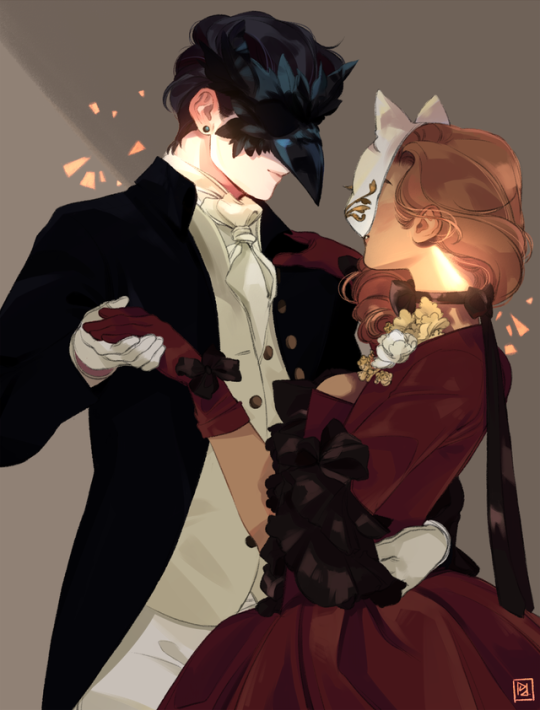
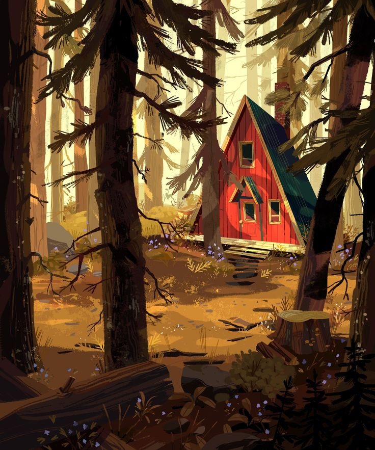

La Biblioteca en el mar mas azul
La Biblioteca en el mar mas azul
La Biblioteca en el mar mas azul

Mucho antes de convertirse en el terror del país de las maravillas,la reina de corazones era una chica que tan solo quería enamorarse. Catherine es una de las jóvenes más deseadas de corazones. Es la favorita del rey. Pero ella quiere vivir bajo sus propias reglas y tomar las riendas de su vida. Pero ¿a qué precio? “Meyer combinó elementos de la oscuridad y de la luz, del destino y del libre albedrío, del amor y del odio, en una historia inolvidable sobre cómo la reina de corazones dejó de ser una joven que soñaba con el verdadero amor y la libertad y se convirtió en una cruel mujer a la que todos recuerdan por su frase, "Que le corten la cabeza”
El circo llega sin aviso, sin anuncio. Simplemente aparece. Dentro de sus carpas blancas y negras se vive una experiencia única, un banquete para los sentidos en el que se puede explorar un laberinto de nubes, caminar en un jardín de hielo o perderse en los ricos aromas de canela y caramelo que flotan en el aire. Bienvenidos al Circo de los sueños. Pero detrás de estas maravillosas escenas existe una feroz competencia un duelo entre dos magos jóvenes, Celia y Marcos, que han sido entrenados desde la infancia para competir en un juego. Obligados a participar por sus caprichosos amos, sin que ellos lo sepan, éste es un juego en el que sólo uno puede sobrevivir y el circo no es más que el escenario para una extraordinaria batalla de imaginación y voluntad. A pesar de todo, Celia y Marco caen irremediablemente enamorados un amor profundo y mágico que causa que las luces parpadeen y el ambiente se caliente con solo tocarse las manos. Pero sus amos siguen moviendo los hilos y el amor imprevisto de Celia y Marco les obliga a intervenir, dejando la vida de todos, desde los artistas a los espectadores, en gran peligro. Divertida, original y fascinante, El circo de la noche es una rica historia de amor que capta la imaginación y encanta los sentidos.
Grecia en la era de los héroes. Patroclo, un príncipe joven y torpe, ha sido exiliado al reino de Ftía, donde vive a la sombra del rey Peleo y su hijo divino, Aquiles.Aquiles, el mejor de los griegos, es todo lo que no es Patroclo: fuerte, apuesto, hijo de una diosa. Un día Aquiles toma bajo su protección al lastimoso príncipe y ese vínculo provisional da paso a una sólida amistad mientras ambos se convierten en jóvenes habilidosos en las artes de la guerra.Pero el destino nunca está lejos de los talones de Aquiles. Cuando se extiende la noticia del rapto de Helena de Esparta, se convoca a los hombres de Grecia para asediar la ciudad de Troya. Aquiles, seducido por la promesa de un destino glorioso, se une a la causa, y Patroclo, dividido entre el amor y el miedo por su compañero, lo sigue a la guerra. Poco podía imaginar que los años siguientes iban a poner a prueba todo cuanto habían aprendido y todo cuanto valoraban profundamente.

Cada siete aänos comienza el agon. Como castigo por la rebelión, nueve dioses griegos son forzados a caminar por la Tierra, entre los mortales, mientras son perseguidos por cazadores, descendientes de antiguos linajes, con ansias de matar a un dios y hacerse con su poder divino e inmortalidad. Hace mucho tiempo, Lore Perseus huyo de esa competiciâon brutal a raiz del sadico asesinato de su familia por parte de un linaje rival, y dejo atras las promesas de la caza de la gloria eterna. Durante aänos ha intentado evadir cualquier pensamiento de venganza hacia el hombre -ahora un dios- responsable de la muerte de su familia. Sin embargo, durante el ultimo agon en Nueva York, dos participantes le piden ayuda: Castor, su amigo de la infancia, a quien creâia muerto y Atenea, una de las âultimas diosas originales, gravemente herida. La diosa le ofrece una alianza contra su enemigo comun y, ademas, una forma de que Lore pueda dejar el agon en el pasado para siempre. Pero la decisición de Lore de vincular su destino al de Atenea y volver a unirse a la caza tendrâa un coste mortal, y puede que no sea suficiente para detener la apariciâon de un nuevo dios con el poder de poner a la humanidad de rodillas.


Bienvenido a El cruce de Caronte. El té está caliente, los bollos recién hechos y los muertos de paso. Cuando Wallace Price se ve asistiendo a su propio funeral, descubre que está muerto. Pero Wallace no está preparado para abandonar este mundo que apenas ha sabido disfrutar en vida. De modo que, cuando le dan una semana para dar el salto al Más Allá, decide vivir plenamente esos escasos siete días que le quedan. Comenzará entonces un extraordinario viaje en el que, con la ayuda de Hugo, quien regenta una pintoresca tetería escondida entre las montañas de un pequeño pueblo y es, además, el barquero que ayuda a las almas a cruzar «al otro lado», aprenderá a disfrutar la belleza de los detalles y podrá compensar todo aquello que se perdió.
Yunjae nació con alexitimia, una enfermedad que le impide reconocer y expresar emociones, y que está asociada a un crecimiento inferior de la amígdala cerebral, generalmente del tamaño de una almendra. Su madre soltera y su abuela hacen todo lo posible por ayudarlo a relacionarse con los demás, si bien en la escuela se enfrenta a la intimidación y al rechazo de sus compañeros por su comportamiento indolente. Pero un día ocurre la tragedia: en la tarde de su decimosexto cumpleaños, la madre y la abuela de Yunjae son víctimas de un violento ataque callejero que termina con su abuela muerta y su madre postrada en cama en estado vegetativo. Yunjae tendrá entonces que vivir solo y encargarse de la librería de libros usados de su familia. Es entonces cuando sucede el inesperado encuentro con Gon, un chico volátil, propenso al mal humor y a las peleas, que ha sufrido una infancia traumática. Ambos son polos opuestos, pero el rechazo que sufren cada uno por diferentes razones— por una sociedad que no los entiende, hace que pasen de ser enemigos, a cultivar una peculiar amistad. ¿Podrá la relación con Gon, el encuentro con una chica llamada Dora que sólo sueña con correr, y su intervención en una situación de vida o muerte, despertar todas las emociones que Yunjae no había experimentado antes?

Una oscura historia fantástica acerca de cómo nacen los villanos. La fiebre de la sangre asoló Kenettra -una isla-ciudad similar a la Venecia renacentista- hace diez años. Algunos de los supervivientes desarrollaron habilidades sobrehumanas debido a las cuales el pueblo les teme y les idolatra a partes iguales. Les llaman los Jóvenes de la Élite. Adelina sobrevivió a la fiebre de la sangre. Y sus habilidades han despertado el interés de los tres bandos que se disputan el poder en la ciudad: el Eje de la Inquisición, la Sociedad de las Dagas. Y su propia familia.
Kate Harker quiere ser despiadada como su padre. Tras cinco años en los que pasó por seis internados, al fin regresa a casa para demostrar que puede serlo.August Flynn quiere ser humano. Pero no lo es. Es un monstruo, capaz de robar almas con una canción. Es uno de los tres monstruos más poderosos de una ciudad plagada de estas criaturas. El arma secreta de su propio padre. Su ciudad está dividida.Su ciudad está desintegrándose. Kate y August son los únicos que pueden ver ambos lados, los únicos que podrían hacer algo. Pero ¿cómo te decides a ser héroe o villano cuando es tan difícil distinguirlos?
La teoría de los archipiélagos viene a decir que todos somos islas, llegamos solos a este mundo y nos vamos exactamente igual, pero necesitamos tener otras islas alrededor para sentirnos felices en medio de ese mar que une tanto como separa. Yo siempre he pensado que sería una isla pequeñita, de esas en las que hay tres palmeras, una playa, dos rocas y poco más; me he sentido invisible durante gran parte de mi vida. Pero entonces apareciste tú, que sin duda serías una isla volcánica llena de grutas y flores. Y es la primera vez que me pregunto si dos islas pueden tocarse en la profundidad del océano, aunque nadie sea capaz de verlo. Si eso existe, si entre los corales y sedimentos y lo que sea que nos ancla en medio del mar hay un punto de unión, sin duda somos tú y yo. Y, si no es así, estamos tan cerca que estoy convencido de poder llegar nadando hasta ti.


Esta es una historia de amor, de sueños y de vida. La de Valentina. La chica que no sabía que tenía el mundo a sus pies, la que creció y empezó a pensar en imposibles. La que cazaba estrellas, la que anhelaba más, la que tropezó con él. Con Gabriel. El chico que dibujaba constelaciones, el valiente e idealista, el que confió en las palabras «para siempre», y creó los pilares que terminaron sosteniendo el pasado, el ahora, lo que fueron y los recuerdos que se convertirán en polvo.
En las ruinas de Caswell, Carter Bennett descubrió demasiado tarde aquello que siempre estuvo frente a sus ojos...Desesperado por respuestas, ha abandonado a su manada para ir detrás del hombre que hasta hace poco no era más que un lobo perdido. Para ir detrás de Gavin Livingstone. Pero los lobos no son animales solitarios, y cuánto más tiempo pasa por su cuenta, más se sumerge en la locura que amenaza a los Omegas. Aunque... ese no es el único peligro que lo aguarda en el camino, y lo que hallará cambiará por siempre la vida de los lobos. EL FINAL HA LLEGADO. ¿ACOMPAÑARÁS A LA MANADA EN SU ÚLTIMA CANCIÓN? Porque Gavin podría ser más que un eslabón perdido. Podría ser otro de los terribles secretos de Thomas Bennett. Y los pecados del padre siempre caen sobre sus hijos.
Alex es atrevida, caótica y seductora. Sabe cómo ligarse a cualquier chica…, pero seguir con su novia es otro tema. Molly lo tiene todo bajo control, pero le cuesta abrirse al mundo… Sabe que está enamorada de Cora, pero en realidad no ha hablado con ella todavía. Cuando, la noche antes de empezar la universidad, Alex descubre quién es el crush secreto de Molly, ambas deciden formar equipo: Alex ayudará a Molly a enamorar a la chica de sus sueños y así le demostrará a su ex que es capaz de cambiar y tener amigas.